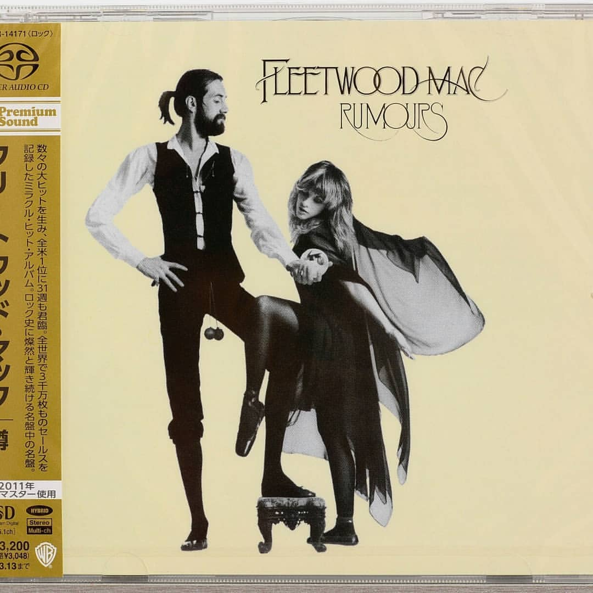

100% ORIGINAL JAPAN RELEASE SACD Hybrid Fleetwood Mac - Rumors🔝 - 1850 рублей
Catalog No. WPCR-14171
JAN/ISBN: 4943674108947
Product Type SACD Hybrid
Number of Discs 1
Label/Distributor Warner Music Japan
TRACKLISTING
1.SECOND HAND NEWS
2.DREAMS
3.NEVER GOING BACK AGAIN
4.DON`T STOP
5.GO YOUR OWN WAY
6.SILVER SPRINGS (Bonus Track)
7.THE CHAIN
8.YOU MAKE LOVING FUN
9.I DON`T WANT TO KNOW
10.OH DADDY
11.GOLD DUST WOMAN
12.SONGBIRD
Although SACD releases are compatible only with SACD players, the ones that are labeled "SACD Hybrid" include an additional layer of audio in CD format compatible with standard CD players (the audio quality is limited to CD quality through standard CD player playback).
SACD Hybrid disc has a layer that is playable also on regular CD payers. Such titles are indicated as "Format: SACD (Hybrid)" in item details page.